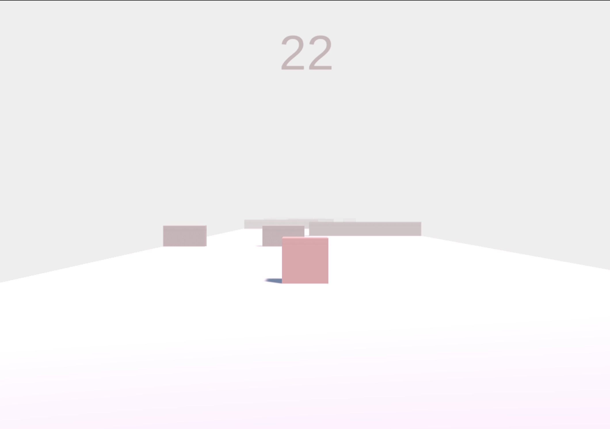

In this interactive adventure game, you play as one of eleven individuals trapped in a secluded forest. Your objective is to find out the truth behind Takumi's murder, and in doing so, determine if Kaori, the prime suspect, is truly the culprit. As you progress, you'll navigate through intense conversations, engage in minigames, and be challenged with two-option-choice questions, all leading to the truth. Do you have what it takes to be the hope for Takumi?
I crafted this game with a partner. My contribution to this creation was coding the game, finding some assets for the game, and drawing the character sketches that my partner gave me.
In this interactive adventure game, you play as one of eleven individuals trapped in a secluded forest. Your objective is to find out the truth behind Takumi's murder, and in doing so, determine if Kaori, the prime suspect, is truly the culprit. As you progress, you'll navigate through intense conversations, engage in minigames, and be challenged with two-option-choice questions, all leading to the truth. Do you have what it takes to be the hope for Takumi?
I crafted this game with a partner. My contribution to this creation was coding the game, finding some assets for the game, and drawing the character sketches that my partner gave me.
Need a game that you can sit and play for hours? Well, dive into a Flappy-Bird-like game featuring four levels. Unlock these levels by hitting score milestones of 500, 1000, and 1500. Your current score is displayed at the top of the screen. Beware of obstacles because a collision triggers a retry option, sending you back to the beginning of your current level. When you want to change levels, just head to the settings button in the top left. Additionally, I'd like to mention that this is the first game where I worked with window screen sizes. This means that based on your device's window size, the game's speed and obstacle height will either decrease or increase for a better experience.
Guessing Game and Clicking Game
When I first learned about JavaScript, I was eager to incorporate it into a game, and that's where the Clicking Games come into play. With every click, the clicker count increases, and the goal of the game is simple: reach 20,000. Now, that may seem like a big number, but there are ways to achieve it. For example, after reaching certain milestones, each click will count for more than just one. As for the Guessing Game, players are presented with 5 questions about me, and if you answer a question incorrectly, you have to restart the game from the beginning. Due to the limited number of questions, I thought this approach would make it challenging but not impossible.
Rock Paper Scissors
In this Rock Paper Scissors game, you select your choice by pressing it on the left-hand side. In the middle, it will display your choice and your opponent's (the computer) choice. At the top, you'll find information about the number of rounds, the score, and the current winner.
Tic Tac Toe
A simple game of Tic Tac Toe. Two players take turns placing their marks into a position on the grid by typing the column number, a space, and then the row number. The first player to get three of their marks in a row (up, down, across, or diagonally) is the winner. When all nine squares are full, the game is over. If no player has three marks in a row, the game ends in a tie. If a player makes an impossible move, such as placing their mark on a position that is already occupied, they will be allowed to redo their turn.
RPG on Unity Engine (no link)
Working alongside a tutorial, I created a 3D RPG starter game in Unity Engine. To look around, you use the WASD or arrow keys, and to move, you click your desired destination. The character then navigates and finds the fastest path to the selected spot on its own, avoiding obstacles such as water and trees.
RPG on Scratch
Guided by a tutorial, I successfully created another RPG starter game. However, this one has some main differences. Firstly, it's a 2D game where you use the WASD or arrow keys to move around. With its scrolling background feature, the background moves with the character. In addition, you are unable to go past the end of the map, which is indicated by a row or column of bushes. I designed it so that different items (bushes, leaves, grass, flowers) spawn at different locations around the map with each game session. Furthermore, by pressing the '0' button, you can access a tile palette, allowing you to place items that will remain on the game's map. This is helpful for me when I want to design a game level. Speaking of levels, the background consists of three layers, creating depth in the game. This means that the character can be seen in front of a house but not behind the house.
Simple Choice-Based Game on Scratch
Also made on Scratch, this simple choice-based game takes you on a dark adventure where each decision you make either leads to your death or progresses the story. I designed it so that when you retry, you can redo your choice and select the correct one, instead of having to restart the entire game.
Platformer on Unity Engine (no link)
Thanks to a tutorial, I developed a platformer game using Unity Engine. The game involves navigating through a series of predetermined obstacles. If your character collides with any of these obstacles, the game restarts. You'll find a score counter at the top that increases as time passes and resets when you hit an obstacle. When you reach the end of the level, you'll encounter a "Level Complete" screen and then proceed to the next level, offering a total of three levels as you progress.

